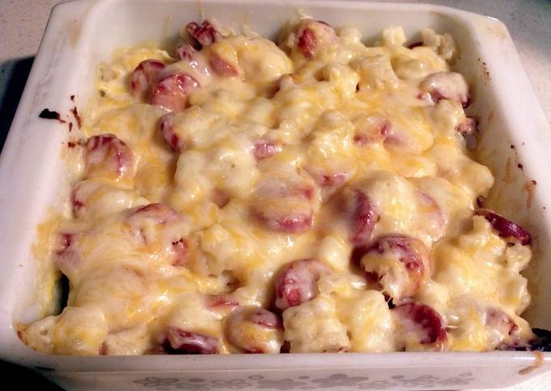

PENNIES AND POTATOES

the comfort food that my bubu loves
ingredients
- 4-5 medium sized potatoes cold boiled, diced
- 1 medium onion chopped
- 6 tbsp flour
- 1/2 cup milk
- 1 lb (1 package) hot dogs sliced
- 1 stick butter thinly sliced
- 1 cup shredded cheese cheddar for my bubu
- salt and pepper to taste
steps
- preheat oven to 350 degrees F
- combine potatoes and onions, sprinkle with flour and season with salt and pepper
- add milk and hot dogs
- put in combined ingredients into a greased 9x13 in baking pan and dot with butter
- bake in oven preheated oven at 350 degrees F for 30 minutes
- top with cheese and bake for 5 more minutes